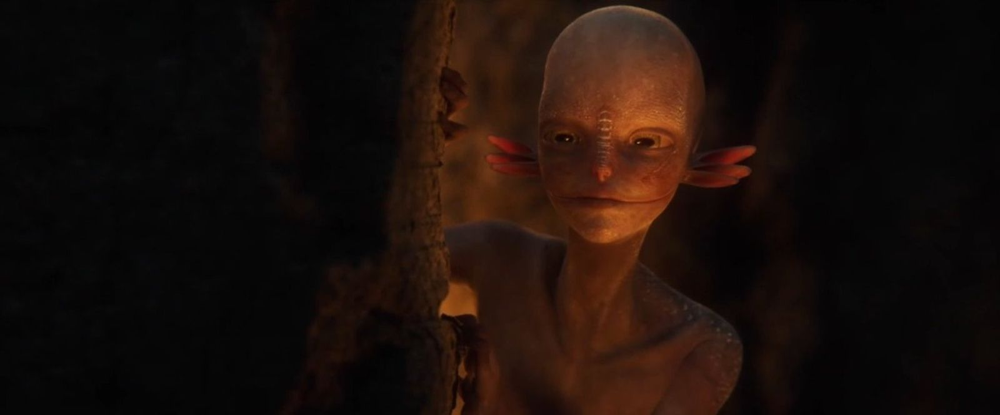

Production breakdowns organized by project: how the work was approached, the decisions behind it and the results.

The Stigma Shortfilm
Realistic PBR short film set on Arawa, an alien planet devastated by drought. Two years of production with a team of eleven and more than forty collaborators.
Lead Animator
Lead CFX Artist
Character Modeling
Texturing
STIGMA / Modeling
3D Modeling & Displacement: Conchi
STIGMA is a realistic PBR short film set on Arawa, an alien planet devastated by drought, developed over two years by a team of eleven with more than forty collaborators. The story is seen through the eyes of Conchi, a young acolyte who assists in the gestation rituals and witnesses the sacrifice taking place in the short film. In this article I'll showcase the work I did for the short film.
ZBrush
Maya
Houdini
Meet Conchi: Gathering References
Conchi is a preteen, around eight or nine in human terms, living through the famine that ravages her planet. The reference board was built around her turnarounds, focusing on three things: emaciated, bony bodies, childlike facial features and skin imperfections.
Coming from a more cartoon-oriented background, Conchi turned out to be the most natural fit in the cast: expressive, big-eyed, and the character that made the project click on a personal level.
Conchi concepts by Naiara Tamayo and Julia Aguiló.Reference board for Conchi.
Sculpting Conchi in ZBrush
The sculpt was done in ZBrush with one clear goal: Conchi had to convey curiosity and tenderness through her eyes while staying anatomically consistent with her species. Feedback from the team and from Character Modeling supervisor Albert Vivó shaped the final read of her face.
Conchi's sculpt in ZBrush, face close-ups.Full body sculpt.Hands and feet close-ups.
Retopology in Maya
In STIGMA, every character shares the same topological base. This meant UVs, textures and displacement could travel from one character to the next instead of being rebuilt each time, which saved a lot of production time.
Reusing topology across the cast
The Mother, already finished, was used as the base. Her retopology was projected onto Conchi with Houdini's retopotransfer node, then refined in Maya with smooths and sculpting tools. The edge loops were also used to slightly enlarge her eyes and sharpen key areas.
Conchi's retopology in Maya.
Opening the mouth
To work on the inner membrane of the mouth, a temporary jaw setup was added using an existing skinning, so the mouth could be opened, adjusted and closed again without breaking the base mesh.
Conchi with her mouth open to work on the membrane. Skinning by Marc Tragant.
Matching polycounts for clean UV transfers
The shared-topology approach only works if every mesh has exactly the same polycount, so this was checked at every step. Three UV variants were transferred (8, 16 and 20 UDIMs) to adapt texture resolution to how close the character is to camera in each shot.
Back to ZBrush: Volumes and Displacement
Primary volumes
Once the retopology was ready, the model went back to ZBrush to recover what had been lost along the way: bone structure, tear ducts, wrinkles, hands, feet and musculature.
Primary volumes in ZBrush.
Layered displacement: mixing reptile and human skin
Starting from the Mother's displacement, the skin detail was built in non-destructive layers, blending reptile and human skin in different proportions by zone. The forehead and cheeks, the areas most exposed to the desert sun where Conchi spends her days collecting shells, got dry, flaky scales made with custom brushes. The nose scales and lips received their own detail passes.
Secondary and tertiary volumes in ZBrush.Close-up of the nose scales and skin detail.
Final result
With the displacement maps exported, Conchi moved on to texturing and lighting.
Final Conchi with retopology. Textures by Paula Francín.Final render of Conchi. Lighting by María González.
One Set of Teeth for Every Character
A single set of teeth was designed for the whole cast. After looking at human, cat, amphibian and primate references, the final choice was human teeth with exaggerated canines, close to a fruit-eating primate: alien enough to fit the species, human enough not to feel unsettling. Dirt and wear were left for texturing, so they could be applied per character.
Teeth references.
The teeth and gums were sculpted in ZBrush and then retopologized and unwrapped in Maya.
Teeth sculpt in ZBrush.Teeth retopology and UVs in Maya.
Character Texturing: Enfermo 001 & Conchi's Outfit
Two assets were textured for STIGMA: Enfermo 001, one of the sick villagers waiting to be cured by the sacrifice, and Conchi's outfit for sequence 080, the sacrifice itself. Both were taken from displacement through to lookdev.
ZBrush
Mari
Substance Painter
Houdini
Karma
Sculpting Sickness: Displacement for Enfermo 001
Enfermo 001 had to look wasted away, a reflection of the physical toll the planet's crisis takes on its people. References of burned and scarred skin, prominent veins and infections guided the process.
References for Enfermo 001.
Using the same layered ZBrush workflow as Conchi, muscles, cavities and wrinkles were defined first, followed by pores, skin marks, scales, scars and veins.
Secondary volumes of Enfermo 001. Base model and retopology by Víctor Molini.The scar.
Texturing in Mari
Starting from a shared base
As with most of the cast, texturing started from the Mother's base textures to keep every character cohesive. The ZBrush displacement maps were then used as masks for pores, imperfections and volumes, and the skin was pushed towards a sick, exhausted look with blotches and dark circles.
Texturing Enfermo 001 in Mari.
One model, two characters
The same model was reused for a second character, the masked dancer. The skin was textured without the scar first, so the scar could be layered on top for Enfermo 001 and left out for the dancer, keeping the reuse invisible on screen.
Isolating a scar mask
The baked scar maps also picked up unrelated areas of the body, and a simple Levels adjustment wasn't enough to separate them. The solution was to invert the occlusion map and multiply it with a painted layer, ending up with a clean mask where only the scar remained.
Scar bake maps.Node setup for the scar mask.Resulting scar mask.
Painting a bruise
The scar was painted with yellow, violet and red tones based on real bruising. Colors were deliberately oversaturated, since Houdini's Karma tended to flatten them at render time.
Scar texturing.Render after color and saturation corrections.
Lookdev in Houdini: Eyes, Wetness and SSS
The lookdev scene was set up in Houdini, including eyes and wetness. The Sabia's eye material was reused to give Enfermo 001 a sick, almost blind look, and the SSS was adjusted before publishing the final USD to the Asset Catalog.
Lookdev scene in Houdini.Render with corrected SSS.Final render of Enfermo 001.
Texturing Conchi's Sacrificial Outfit in Substance Painter
Concept and symbolism
The outfit draws on Egyptian textiles: gold, shine, vivid colors and, above all, linen, considered the purest fabric and required in temples. The pants, by contrast, are silk, an animal fabric seen as impure in ritual contexts.
That duality mirrors Conchi's arc: she follows the Sabia but ends up identifying with the Mother. The palette reflects it too, combining the Mother's blue, innocent and virginal, with the Sabia's earthy, intense orange.
Outfit concept by Celia Ribas.Outfit references.
Texturing process
The outfit was textured in Substance Painter, with tears and dirt added at the end, and published as USD once approved.
Texturing the outfit in Substance Painter.
The veil visible in the process images didn't make it to the final outfit: the shape of Conchi's ears created a bulge underneath it that never quite worked.
Animation was the biggest contribution to STIGMA. As co-Lead Animator alongside Paula Hernández, the role covered both running the department and animating around twenty shots across keyframe, motion capture and fixes.
Maya
Vicon Shogun
Human IK
Studio Library
SyncSketch
Organizing the Animation Department
Leading a 100-shot department
With a hundred shots to deliver and a team that relied heavily on external collaborators, planning came first. The department kicked off with a meeting with animation supervisor Leonardo Pereira, supported by character sheets describing each character's personality and anatomy, so everyone started from the same understanding.
Character sheets.
An animation tracker that sets priorities
The existing layout tracker was expanded into an animation scouting with assignments, status, acting notes and references. Priority was set by dependency: the more departments (like CFX or FX) waiting on a shot, the higher it ranked. Shots were then split between the core team and collaborators from third and fourth year, assigned according to each animator's strengths.
Animation scouting.
Onboarding collaborators
A bilingual pipeline document (Spanish and English) set the rules for everyone from day one. A project-wide SyncSketch centralized reviews for all departments, and Discord was organized with one thread per shot, tagged To Do, WIP or Approved, so feedback and status could be tracked at a glance.
Animation pipeline document for collaborators.The project's SyncSketch.Communication threads on Discord.
The "Happy Meal" shot folder
Each shot was delivered as a self-contained package, following a method taught by the supervisor: a ready-to-animate .ma file, notes, the shot reference, and layout videos of the previous, current and next shot for context. Any collaborator could open the folder and start animating right away.
References
Walking on tiptoes
STIGMA's characters walk on their tiptoes, so the walk cycle research drew from herons, people walking in heels and the Kaminoans from Star Wars. Annotated references became the starting point for the walk cycle explorations, done with the first body mechanics rig and aiming for a tired, worn-out feel. A first facial test was also used to check textures and deformations.
First animation references.Walk cycle explorations.First facial test.
Directing live-action reference
Reference for the Mother, the Sabia, Conchi and the ritual dances was directed and recorded with actors and dancers, with the help of Sergi Vizcaíno, Víctor Molini, Paula Hernández and Julia Aguiló.
Reference with Marina Blonce as Conchi.Reference with Raquel García as the Mother.Reference for the Sabia.Dance reference with Alejandro Mendoza, Pol Guinot, Victor Vásquez, Marta Requejo and Jesús Rodríguez.
Animation Work
Part 1: Keyframe
Workflow
Keyframe shots followed a structured process: Golden Poses first, then stepped blocking with a key every four frames following reference, and finally spline to refine curves and add subtle motion. Each stage required supervisor approval. On top of that, the animation was built in layers (body mechanics, facials and micro-movements kept separate) to allow non-destructive changes at any point.
Shot breakdowns
Keyframe shots animated for STIGMA, each shown next to its reference.
Feedback meetings with the supervisor ran once or twice a week, streamed live on Discord so collaborators could follow along, and recorded for anyone who couldn't attend. Supervisor approval in these sessions was the gate for every shot to move forward.
Part 2: Mocap
Motion capture was used for the dance shots. It sped things up, but also brought its own set of challenges.
Capture day at the MediaLab
The capture took place at the university's MediaLab using Vicon Shogun. The process covered suiting up the dancers with reflective markers, calibrating the cameras and floor, and creating and calibrating a subject for each dancer so the system could track them individually. During the takes, the software was monitored to catch issues early, like excessive contact between dancers causing tracking errors.
Dancers in mocap suits.Floor calibration tool and Shogun's interface. Taken from Vicon Shogun's video tutorial.Calibrated space and actor calibrating the subject. Taken from Vicon Shogun's video tutorial.
Cleaning in Shogun
A first cleanup pass was done directly in Shogun, using its solving filters to reduce the errors flagged on the timeline before exporting.
Cleaning errors. Taken from Vicon Shogun's video tutorial.
Retargeting in Maya with Human IK
In Maya, the capture was retargeted through a Human IK rig as an intermediate step, then transferred to the production rig with constraints, resulting in animation baked on every frame and ready for polish.
Retargeting in Maya.
Scaling dance shots with Studio Library
Since all dancers followed the same choreography, base animations were stored in Studio Library and applied across rigs. Individual variations and offsets were then added so the crowd wouldn't feel repetitive.
STIGMA's cloth pipeline covers everything from modeling garments ready to simulate to the final Alembic that goes to lookdev and render. As Lead CFX Artist, the simulation side of the pipeline was designed and documented in Houdini, while the cloth modeling documentation was written by Celia Ribas. This article follows that pipeline through Conchi's outfit for the sacrifice.
Marvelous Designer
Maya
Houdini
Vellum
Cloth Modeling for Simulation
Modeling Conchi's outfit in Marvelous Designer
The outfit, based on a concept by Celia Ribas, needed to feel like a religious acolyte's: a veil and toga combined with loose pants and a high-neck top, balancing the religious and the tribal without losing Conchi's youthful look. It was modeled in Marvelous Designer and then taken to Maya for retopology and UVs.
Modeling Conchi's outfit in Marvelous Designer.
From Marvelous to Maya
Two versions of the garment were exported from Marvelous: the draped 3D cloth and the flat 2D pattern. The UVs were laid out so both sides of each piece overlap as a single shell, meaning one side can be painted and the other matches automatically, which is especially useful for patterns and transparencies.
Outfit UVs.
Manual retopology with Quad Draw and Transfer Attributes
Clean quad topology was drawn over the flat patterns and then transferred onto the draped 3D garment through Transfer Attributes. The pieces were then sewn back together by merging the vertices along each seam.
Transfer Attributes settings.Stitching seams by merging vertices.
Double-sided cloth without dark normals
Each garment was given a second, inner layer with a small gap between both sides, forming a rim when joined. This keeps textures correct on both faces and avoids dark normals when the fabric lifts or is seen from below.
Sculpt Geometry Tool settings and the gap between layers.
Topology density rules
Topology density was set with simulation in mind: denser in areas that need more folds, like the veil or skirt, and lighter in rigid areas like the belt.
Cloth modeling workflow documented by Celia Ribas.
Simulation in Houdini
The Houdini setup was built to be reused across every shot, with each step placed deliberately to keep simulations stable and fast.
Preroll
When a cloth sim starts on the first frame of a moving animation, the solver has no context and the cloth tends to explode. A preroll solves this by giving the cloth time to settle onto the body before the animation begins.
The preferred approach in STIGMA was building the preroll into the Maya animation: a T-pose at frame 950, a hold of the first animated pose from 975 to 1001, and the real animation from 1001 onwards, with the master controller kept still to avoid world-space jumps. When animation arrived without one, the preroll was built in Houdini instead, blending a T-pose skeleton into the first animated frame and offsetting the animation to start at 1001.
Loading the T-pose.Blending the T-pose into the animation.Offsetting the animation with timewarp.Joining the preroll and the animation.Switch keyframes.
A lightweight body collider
The animated body was stripped of everything that doesn't affect the cloth, like hair and shoes, to keep simulations fast. Point velocity was stored to help with fast movements, and the result was published as a single collider shared by every garment.
Importing the preroll and cleaning up the collider.pointvelocity, optional cache and OUT_COLLIDER.Importing the cloth from Maya.
Pin groups at 0,0,0
Redefining pinned vertices shot by shot is slow and error-prone. To avoid it, all pin groups were defined once on the cloth at the world origin, where point indices stay stable, following a pin_[piece]_GRP naming convention. They were then copied onto the posed cloth by point index, so the same pins propagate automatically to every shot.
Pin groups defined on the cloth at 0,0,0.The posed tree.groupCopy bringing the pins over to the posed cloth.
Optimizing cloth for Vellum
Each piece was isolated, stripped of the double-layer rim (only needed for render), remeshed into triangles for Vellum and cleaned up. The clean Maya retopo was kept aside as the render mesh for later.
Remesh, fuse and polydoctor.Each piece ready for simulation.
Tuning stretch, bend and damping
Every fabric was tuned mainly through two parameters: stretch stiffness, which controls how much the cloth stretches (low for elastic fabrics, high for cotton, linen or leather), and bend stiffness, which controls how it folds (low for silk and light fabrics, high for heavy, rigid ones). Damping was kept around 0.2 to 0.3 to calm vibrations without killing the motion.
To iterate faster, each garment could be simulated on its own through a separate test solver, without running the whole outfit.
Setting up the vellumcloth.Stretch and Bend parameters.Side solver for testing one piece.
Pins
The pin groups were attached to the body collider, anchoring tight areas and garment edges while the rest of the fabric moves freely.
vellumattach with the pin group.Pin constraints attached to the body.
Rigid pieces: buttons
Rigid elements attached to fabric, like buttons, were simulated with Vellum struts so they keep their shape instead of behaving like cloth.
Buttons setup.vellumpack connected to the STITCH merge.
Stitching ribbons and buttons
Buttons and hanging pieces like ribbons were sewn to the garment through stitch constraints. The attachment area on the garment was generated as a mask around the pieces, and separate stitch nodes were kept for ribbons and buttons so it's easy to see at a glance what's attached where.
Creating the stitch mask.The mask converted into a target group.Pin group for the ribbon.Ribbon setup.Ribbon stitch settings.Button stitch settings.
Final simulation and caching
All garments were merged into a single solver for the full simulation and cached, the longest and heaviest step of the pipeline.
Full simulation cached.
From sim mesh to render mesh with Wrap
Vellum runs on a light triangulated mesh, while the render mesh, the clean Maya retopo with proper UVs, never goes through the solver. The simulation was transferred onto it with Houdini's Wrap node, which follows the surface more accurately than a Point Deform.
The Wrap setup.
Fixing intersections without re-simulating
Remaining intersections with the body or other garments were fixed in post instead of re-simulating, using Soft Peak to push fabric along its normals and Soft Transform for directional adjustments like a sleeve or collar. Each fix was checked across the whole shot, and Delta Mush was used to clean up leftover noise.
Soft Peak.Soft Transform.Delta Mush for leftover noise.
Subdivide, merge and export
Garments were subdivided for close-ups, merged and exported as a single Alembic, the file handed over to lookdev and render.
Subdivide.Final cloth and Alembic export.
Base scenes per character
To simulate shots in chain, a base scene was prepared for each character with everything already set up and referenced, and every shot started from it. The base scene for Conchi's sacrifice outfit was built as part of this work, together with Celia Ribas and Marc Tragant on the other characters.
Conchi's CFX base scene.
Shots simulated for STIGMA. The veil seen in the process images was cut from the final outfit because it bulged over Conchi's ears.